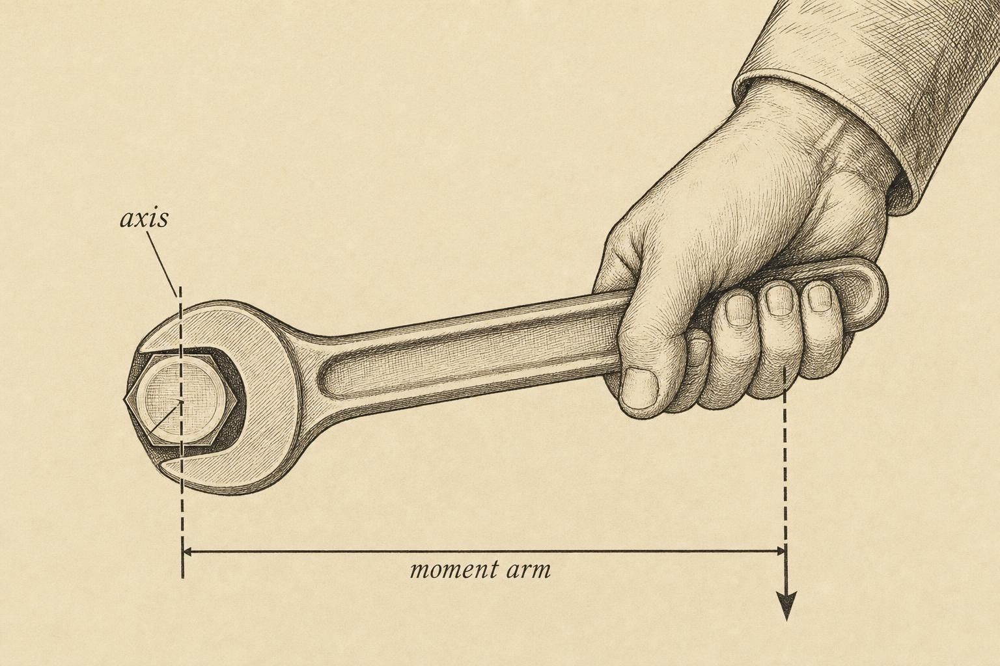
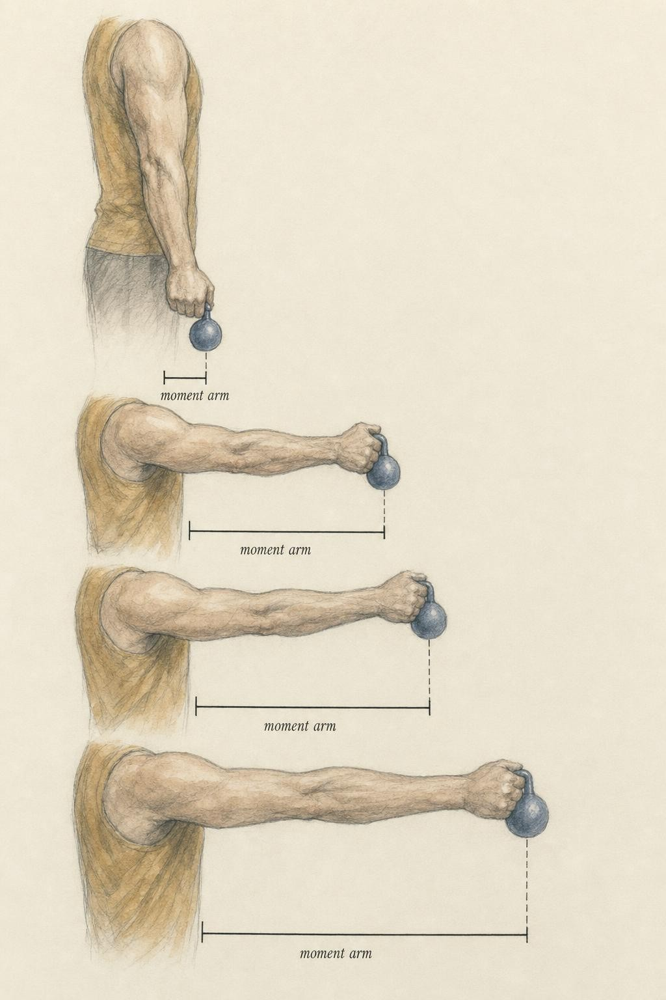

Torque, the Moment Arm, and the Currency of Lifting
Why every hard part of every lift is, underneath, a story about perpendicular distance.
Pick up a wrench and try to loosen a stubborn bolt that has not moved in years. Grip the wrench close to the head and you strain against it, knuckles whitening, the bolt indifferent. Slide your hand out to the far end of the same handle and, with no more effort than before, the bolt yields. Nothing about your muscle changed between those two attempts. Nothing about the bolt changed either. What changed was the distance between the bolt and the line along which you pulled, and that distance, not the force alone, is what actually turned the bolt.
This is the whole chapter compressed into one image, and it is worth sitting with before a single formula appears. The bolt is a joint. The wrench handle is a bone. And the reason a squat crushes a learner at the bottom of the descent, the reason a deadlift punishes a long torso, the reason a lateral raise burns hardest when the arms reach the horizon, all of it lives in that same changing distance. Every hard part of every lift a learner will ever perform is, underneath the sweat and the strain, a story about how far a force sits from an axis. Learn to see that distance and you will read every lift in this course, and every lift in any gym, with a different pair of eyes.
Follow one learner through this chapter: Delphine, a 37-year-old who has been deadlifting recreationally for about three years and who arrived at this course with a specific, nagging puzzle. Her deadlift is nearly unbearable for the first few inches off the floor. Once the bar clears her knees, the same weight that nearly pinned her to the platform starts to feel, in her own words, like it is lifting itself. She had assumed this meant her lower back was simply weak relative to her hips, and she had spent months chasing extra lower-back accessory work to fix an imbalance that, as this chapter will show, was never really about weakness at all. Delphine is not a case to be diagnosed, and nothing here will tell her what to do about any pain she may or may not feel in a given session. She is a stand-in for an experience nearly every lifter has had without ever being handed the vocabulary to explain it, and by the end of this chapter you will be able to explain her sticking point in a single sentence, using nothing but the position of a bar relative to a joint.
From force to torque
You already know from earlier chapters that muscles pull, that joints rotate, and that bones behave as rigid levers pivoting about a fulcrum. But a lift is never a simple matter of force in isolation. Bones do not translate freely through space the way a block slides across a table. They rotate about joint axes, and the physical quantity that governs rotation is not force by itself but torque, sometimes called a moment. Torque is the rotational effect of a force, and it is, without exaggeration, the single most useful idea a learner will carry out of this entire course.
Consider why force alone cannot settle an argument about which exercise variation is harder. Two learners might press the exact same barbell weight overhead, yet one reports a shoulder that feels close to its limit while the other finds the same load manageable. If the story stopped at force, that difference would be a mystery, or worse, it would get explained away as a difference in raw strength that has nothing to do with mechanics. Torque supplies the missing half of the story, because it asks not only how hard a force pulls but also how far that force sits from the joint doing the work. Two people pressing an identical bar can be generating identical forces and still facing very different torques, simply because their limb lengths, their grip widths, or their bar paths place the load at different distances from the shoulder axis.
The definition is compact enough to fit on an index card, and it is worth memorizing outright:
τ = F × d
Torque (τ) equals force (F) multiplied by the moment arm (d). Force is measured in newtons, the moment arm in meters, and torque in newton-meters (N·m), the standard unit for a rotational effect. Two forces of identical magnitude can produce wildly different torques depending on their moment arms, which is exactly the lesson the wrench just taught. Double the moment arm and the torque doubles for free, with no additional effort spent (Keogh, Lake, & Swinton, 2013).
The detail that trips up almost every new learner is the word perpendicular. The moment arm is not the distance from the joint to the point where a force happens to be applied. It is the perpendicular distance from the joint axis to the line of action of the force, meaning the straight, shortest distance from the pivot to the infinite line drawn along the direction the force is pulling (Neumann, 2024). If a force pulls straight down, picture dropping a horizontal line from the joint to that vertical line of pull. The length of that horizontal segment, and only that segment, is the moment arm. Distance along the bone matters only insofar as it changes this perpendicular measurement, which is why two lifters holding a dumbbell at the exact same spot on the forearm can have meaningfully different moment arms once their elbow angle differs.
The answer, that the moment arm is zero and so the torque is zero, captures why direction matters every bit as much as magnitude. A force whose line of action passes straight through the axis has no moment arm and produces no rotation whatsoever, regardless of how large the force is. This is not a strange edge case tucked into a textbook footnote. It is the boundary condition that organizes everything else in this chapter, because it tells a learner that a force only contributes to a lift's rotational demand to the extent that its line of action misses the joint axis.

The wrench: force times perpendicular distance, made concrete." data-image-idx="0" style="display:block;max-width:100%;max-height:75vh;height:auto;width:auto;margin:0 auto;cursor:pointer;">Two moment arms in tension
Here is where the human body departs from a simple wrench and a bolt. In a wrench, only one torque exists, the one a learner applies. In a lift, there are always at least two torques contesting the same joint at the same instant, and each has its own moment arm. Learning to see both at once, and to treat them as opponents rather than as separate facts, is the heart of this chapter.
The external moment arm
The load, whether a barbell, a dumbbell, or the weight of a learner's own limb, is pulled straight down by gravity. Its line of action is a vertical line falling through its center of mass. The external moment arm is the horizontal distance from the joint axis to that vertical line of gravity. Multiply the external moment arm by the load's weight and the result is the external torque, the rotational demand the load places on the joint (Neumann, 2024). Think of the external torque as the opponent in this contest. It is what the body must overcome to move, or even merely to hold, the load in place.
The internal moment arm
Opposing the load is the muscle. A muscle pulls along a line of action running from its insertion toward its origin, and the internal moment arm is the perpendicular distance from the joint axis to that line of muscle pull. Multiply the internal moment arm by the muscle's tension and the result is the internal torque, the rotational effort the muscle supplies (Hamill, Knutzen, & Derrick, 2014). This is the body's own ally in the contest, and unlike the external moment arm, a learner cannot lengthen it by changing stance or grip. Internal moment arms are fixed by skeletal geometry, set by where a tendon happens to attach relative to a joint, and while they differ modestly from one person to the next, they do not change from one set to the next the way external moment arms do.
It is worth noting that internal moment arms are not perfectly identical from person to person either. A tendon's exact insertion point varies within a normal range across individuals, which is part of why two learners with comparable training histories can display different relative strength across exercises, one built for a slightly longer effective moment arm at the elbow, another built for a slightly shorter one at the hip. This anthropometric variation, covered in more depth in a later chapter of this course, does not change the equation itself. It only changes the numbers a particular learner plugs into it, which is exactly why comparing one lifter's technique to another's rarely produces a fair verdict about effort or ability.
Every static position in every lift is a negotiation between these two torques:
Fmuscle × dinternal = Fload × dexternal
When a learner holds a weight motionless, internal torque equals external torque and the joint sits in rotational equilibrium. When a learner lifts, internal torque briefly exceeds external torque and the segment rotates in the learner's favor. When the load wins, external torque exceeds internal torque and the segment is lowered, whether the learner intends that or not.
Now look closely at the size mismatch between these two moment arms, because it is severe, and it is the real reason lifting feels hard even when the numbers on the plates look modest. External moment arms are measured in tens of centimeters, the length of a forearm, the horizontal reach of an inclined torso. Internal moment arms are measured in single centimeters. Németh and Ohlsén (1986), imaging 21 living subjects with computed tomography (CT), found the erector spinae's internal moment arm about the lumbosacral joint to average roughly 68 millimeters, well under seven centimeters. When a barbell hangs 30 or 40 centimeters forward of the lumbar spine during a deadlift, the muscle is fighting from somewhere between a five to one and a six to one mechanical disadvantage. To hold that load static, the erector spinae must generate several times the load's own force. This is the same lever cost introduced earlier in the course, now attached to an actual number.
The arithmetic, 340 divided by 68, comes out to five, which tells a learner the muscle force required is about five times the external load. Load a 100 kilogram deadlift and the tissue crossing the lumbar spine is managing forces that dwarf the plates loaded on the bar. This is not a reason for alarm. It is the ordinary price of the geometry every human is built with, and it is precisely why lifting technique, and the position of a bar relative to a learner's joints, deserves the obsessive attention coaches give it.
The moment arm changes as you move
So far this chapter has frozen a lift in a single static pose, one snapshot in time. But a lift is a rotation, and the instant a joint begins to move, the geometry never stops shifting. The external moment arm in particular behaves like a moving target throughout a lift, and understanding exactly how it moves is what lets a learner predict, before ever touching a bar, where in the range a given lift will get hard.
Consider a dumbbell held in the hand during a lateral raise, or a curl, or any single-joint movement in which a limb sweeps through an arc against gravity. Gravity always pulls straight down, without exception. The external moment arm is the horizontal distance from the joint to the weight. When the limb hangs straight down at the side, the weight sits almost directly beneath the joint, the horizontal distance is close to zero, the external moment arm is close to zero, and the movement feels nearly weightless. As the limb rises toward horizontal, the weight swings outward, the horizontal distance grows, and the external torque climbs with it. When the limb is exactly parallel to the floor, the weight is displaced from the joint by the greatest possible horizontal distance: the external moment arm is at its longest, and the external torque peaks (Keogh, Lake, & Swinton, 2013). This is precisely why a lateral raise burns most viciously as the arms approach parallel with the floor and eases the instant the arms pass the top or return toward the sides. The muscle's felt demand tracks the external moment arm, and that moment arm rises and falls with the sine of the segment's angle from vertical. Geometry, not fatigue alone, is authoring that sensation.

As the segment sweeps toward horizontal, the external moment arm grows to its maximum." data-image-idx="1" style="display:block;max-width:100%;max-height:75vh;height:auto;width:auto;margin:0 auto;cursor:pointer;">The same logic explains the notorious bottom of a squat. While descending, the torso inclines forward and the shins travel forward over the feet. Both changes push the barbell's line of gravity further from the hip axis and the knee axis, lengthening the external moment arms at precisely the moment the muscles crossing those joints are least mechanically favored. Straub and Powers (2024), reviewing squat biomechanics for a clinical audience, show that the orientation of the trunk relative to the shin is the primary determinant of whether the hip extensors or the knee extensors bear the larger share of the external torque during a squat. Sit the torso more upright and the hip's external moment arm shortens while the knee's lengthens. Incline the torso forward and the reverse happens. There is no way to shorten both external moment arms at the same time. A learner can only choose where the demand lands, not whether it exists at all. That single insight drives an entire later chapter devoted to the squat.
Picture two squat depths to make the trade-off concrete. In a moderately upright high-bar squat, the trunk stays close to vertical through most of the descent, keeping the barbell's horizontal displacement from the hip small and shifting a larger share of the total torque onto the knee extensors. In a more forward-leaning low-bar squat, the trunk inclines further, the bar's horizontal distance from the hip grows, and a larger share of the torque shifts onto the hip extensors, while the knee's external moment arm shrinks somewhat as the shins stay more vertical. Neither pattern is more correct in the abstract. Each simply routes the identical total demand through a different combination of joints, which is why two competent lifters can use visibly different squat styles and both be moving the geometry intelligently rather than incorrectly.
Internal moment arms shift through a joint's range too, though the change is usually gentler than the swings in external demand. Chen and Franklin (2025), aggregating roughly 300 published moment-arm datasets across the hip, knee, and ankle for a systematic visualization in Annals of Biomedical Engineering, show that a muscle's internal moment arm characteristically rises and falls as joint angle changes, often peaking somewhere in the middle of the range and tapering toward both extremes. The sign of that moment arm even helps determine whether a given muscle acts as a flexor or an extensor at a particular angle, and its magnitude helps set how hard that muscle must work to produce a given torque. So both sides of the fundamental equation are in motion at once during any real lift: external torque climbing and falling with the load's changing geometry, internal capacity waxing and waning with the muscle's changing leverage and length.
Strength curves and the anatomy of a sticking point
If the demand placed on a muscle changes continuously through a lift's range, the muscle's ability to meet that demand must change too, and it does, in a predictable and measurable way. Plot the maximal torque a muscle group can produce against joint angle and the result is a strength curve, the fingerprint of exactly how strong a learner is at every point in a movement, not merely at the single position where they happen to test a maximum (Kulig, Andrews, & Hay, 1984).
Kulig, Andrews, and Hay (1984), in a systematic review of torque-angle relationships across the major muscle groups, established a finding that still anchors this field decades later: no muscle produces constant torque across its full range of motion (ROM). Some strength curves ascend, meaning the muscle group is strongest near full extension. Some descend, strongest instead at the stretched, more flexed end. Many are shaped like a hill, peaking somewhere in the middle of the range and falling away at both extremes. The shape of any particular curve is the product of two things multiplied together: the muscle's internal moment arm at each angle, and the muscle's force-generating capacity at each length, the latter governed by the familiar force-length relationship covered earlier in this course. Where a long internal moment arm coincides with a favorable muscle length, the curve peaks. Where a short internal moment arm meets an over-stretched or over-shortened muscle, the curve dips (Hamill, Knutzen, & Derrick, 2014).
Now overlay the strength curve against the demand curve, meaning the external torque the load imposes at each angle, and a lift's entire personality becomes legible at a glance. The hardest point in any range, commonly called the sticking point, is simply wherever the ratio of demand to capacity is worst: where the external moment arm has grown long at the same instant the muscle's torque-producing ability has thinned out. That single overlap explains why a bench press stalls a few inches off the chest, why a squat is hardest just above the very bottom, and why a curl fights back hardest somewhere near ninety degrees of elbow flexion. Each is a place where the demand curve and the strength curve pinch together.
A simple numeric sketch makes the overlap concrete. Suppose a lift's external torque runs from 40 N·m near the top of the range to 95 N·m at its hardest point, while the trained muscle group's strength curve runs from 220 N·m at the top down to only 110 N·m at that same hardest point. At the top, capacity outstrips demand by a wide margin and the lift feels easy. At the sticking point, capacity has fallen to roughly 110 N·m against a demand of 95 N·m, a ratio far tighter than at the top, and that narrowed gap is exactly what a lifter experiences as the bar slowing down or stalling. Nothing about the muscle failed. The gap between what is asked and what is available simply closed.
The bench press has been studied closely enough to make this concrete. Elliott, Wilson, and Kerr (1989) filmed ten elite powerlifters bench pressing loads at roughly 80 percent of their maximum, at a true maximum, and at an unsuccessful supramaximal one-repetition maximum (1RM) attempt, using three-dimensional cinematography alongside surface electromyography. They found that the moment arm of the bar about the elbow decreased through the early part of the ascent, reached its smallest value right in the sticking region, and then grew again through the remainder of the lift. Their reading of the data was not that the muscles suddenly lost the ability to produce force in that region. It was that the lifters found themselves in a genuinely disadvantageous mechanical position, a place where the geometry of shoulder, elbow, and bar conspired against efficient force transfer, regardless of how much muscle mass or raw strength a given lifter carried into the attempt.
Kompf and Arandjelović (2016), reviewing sticking-point mechanics across the bench press, squat, and deadlift for Sports Medicine, arrive at a similar conclusion from a wider angle: sticking points are best understood as a disproportionate jump in difficulty at a specific point in the range, driven by a combination of changing moment arms, changing muscle length, and, in some lifts, the loss of stored elastic energy from the preceding phase of the movement. Their review is a useful corrective to a persistent gym myth, the idea that a sticking point reveals a single weak muscle that needs isolating and strengthening on its own. More often it reveals a moment in the range where several muscles simultaneously lose leverage at once, which is a mechanical problem before it is ever a muscular one.
This is also why strength testing performed at only one joint angle can be misleading. A single maximal effort captured at, say, ninety degrees of knee flexion says nothing about how that same muscle group performs at forty-five degrees or at full extension, because the strength curve is a curve, not a point. Clinicians and researchers who need the full picture use isokinetic dynamometry, a testing method that holds joint velocity constant while measuring torque continuously through the range, precisely because it captures the shape of the curve rather than a single snapshot of it. A learner does not need that equipment to benefit from the concept. Simply knowing that strength is angle-dependent is often enough to stop mistaking a geometric sticking point for a training failure.
This is also the reasoning behind the chains, bands, and cam-shaped pulleys found on many gym floors. All three tools attempt to reshape the external demand curve so that it better fits the strength curve, piling on additional resistance exactly where a lifter is strongest and easing off where they are weakest, so that the ratio of demand to capacity stays closer to constant across the whole range (Keogh, Lake, & Swinton, 2013). A learner cannot change their own moment arms; skeletal geometry is fixed. But a learner, or a coach, can change how the load's moment arm behaves through the movement, and that is the entire engineering premise behind every accommodating-resistance device sold as training equipment.
Reading real lifts: the deadlift case
Put the entire apparatus built in this chapter to work on one real lift, because the payoff here is analytic, not merely definitional. Escamilla and colleagues (2000) performed a three-dimensional biomechanical analysis of sumo and conventional deadlifts on 24 lifters competing at a national powerlifting championship, a rare study capturing elite athletes pulling near-maximal loads under real competition conditions rather than in a sanitized laboratory pull. They quantified joint moments and moment arms at the ankle, knee, and hip throughout the pull.
Their measurements are worth citing directly because they illustrate how large these differences actually are in a lift performed by elite competitors rather than novices. Escamilla and colleagues (2000) reported that peak hip extensor moment was significantly greater during the sumo pull, while peak knee extensor moment showed the reverse pattern, higher in the conventional style, a finding entirely consistent with a wider stance shortening the moment arm at one joint while lengthening it at another. The lumbar extensor moment, the number most directly tied to the low-back demand lifters worry about, trended lower in the sumo pull, again tracking the shortened horizontal distance between bar and spine that a wider, more upright stance produces.
The finding maps directly onto the framework built across this chapter. The sumo stance, wider and more upright through the trunk, shortens the horizontal distance from the lumbar spine to the bar. A shorter external moment arm at the lumbar spine means less external torque demanded there, and Escamilla and colleagues (2000) reported correspondingly reduced demand on the lumbar extensors relative to the conventional pull. The trade is not free. The wider stance loads the hips differently and recruits the hip abductors and adductors more heavily than a conventional pull does. But notice what the study is actually demonstrating. It is not discovering that sumo is easier in some general sense. It is showing that changing body orientation redistributes external moment arms across joints, moving torque demand from one location to another rather than eliminating it, which is exactly the lesson Straub and Powers (2024) drew for the squat.
This is also the mechanical truth behind one of the oldest coaching cues in the sport: keep the bar close. A bar drifting even a few centimeters away from the body during a pull does not just look untidy. It directly lengthens the external moment arm at the hip and the lumbar spine, which directly increases the external torque those joints must resist, which in turn increases how much force the muscles crossing them must produce to hold the position and complete the lift. The cue survives across a century of coaching not because it is traditional but because it is, in the vocabulary of this chapter, a direct instruction to minimize an external moment arm. A learner who understands torque does not need to take the cue on faith. They can derive it.
Return, now, to Delphine's puzzle from the opening of this chapter. Her deadlift feels nearly impossible for the first few inches off the floor and unexpectedly manageable through the rest of the pull. Run her position through the same lens. At the very start of a conventional deadlift, the hips are low, the torso is inclined well forward, and the bar sits close to the floor but far forward of the lumbar spine and hip axis, producing long external moment arms at both joints simultaneously. As the bar rises past the knees, the torso straightens, the hips extend, and the bar's horizontal distance from the lumbar spine and hip shrinks rapidly. The external moment arms that made the first few inches brutal are, by the time the bar clears the knees, mostly gone. Delphine was never weak off the floor. She was, for a few crucial inches, fighting the longest external moment arms the lift ever produces, and then the geometry itself did most of the remaining work for her.
This is the engine to run on every lift for the remainder of this course. Freeze the position. Find each joint axis. Drop the vertical line of gravity through the load. Measure the horizontal distance from axis to line, because that distance is the external moment arm, and wherever it is longest, the demand peaks. A learner who can do that on paper, before ever touching a bar, already knows where a lift will feel hardest and why. Everything else in this course is elaboration on that single, repeatable move.
The moment arm is the key property linking muscle force to joint torque. Its sign determines whether a muscle flexes or extends a joint, and its magnitude helps determine how much activation that muscle needs to meet a given demand.
Paraphrasing Chen and Franklin (2025)
The line we will not cross: mechanics versus medical judgment
Before closing this chapter, it is worth naming the boundary that governs everything this course does with the biomechanics being taught. Torque and moment arms explain why a lift feels the way it feels at a given joint, in a given position, under a given load. That explanatory power is genuinely useful. It lets a learner understand why a stance change shifts demand from the hips to the knees, why a sticking point sits where it sits, and why two people built differently can find an identical lift easy or brutal for reasons that have nothing to do with effort. None of that, however, is the same as telling a specific person what is wrong with a specific joint, or what they should do about pain.
This distinction matters because the language of moment arms is seductive. It sounds precise, mechanical, almost medical, and it is tempting to reach for a phrase like your hip moment arm is too long as though it were a diagnosis rather than a description of geometry. It is not a diagnosis, and it was never meant to be one. Biomechanics can tell a learner that a longer external moment arm demands more internal torque. It cannot tell a learner, or anyone else, whether a twinge felt during a lift is ordinary fatigue, a normal adaptation response, or something that needs a clinician's attention. Those are different questions, answered with different tools, by different people.
Take a concrete example. This chapter can explain, with confidence, why a longer torso tends to lengthen the external moment arm at the lumbar spine during a deadlift, and why that geometry alone can make the lift feel more demanding for a long-torsoed learner than for a short-torsoed one lifting the identical weight. What this chapter cannot do, and would be irresponsible to attempt, is look at a specific learner's discomfort and declare whether it reflects that ordinary geometry or something else that needs attention. The mechanism explains a pattern across bodies in general. It does not replace an examination of one body in particular.
Hold that boundary alongside the injury framing already introduced earlier in this chapter. A sticking point that has always been part of a lift's shape is a mechanical feature, explained by the geometry covered here. A sensation that is new, sharp, localized, or simply different from what a learner has felt in that same lift before is not a mechanical puzzle to reason through with a moment-arm diagram. It is a sign that warrants professional evaluation. Knowing the difference between a predictable sticking point and a genuine warning sign is not a failure of this course's material. It is the material working correctly, because understanding a mechanism well enough to know its limits is a more advanced skill than simply reciting the mechanism.
Case study: Delphine and the pull that fought back
Run Delphine's situation through this chapter and the frustration mostly resolves, not into a verdict about her back's strength, which is not something this course is positioned to judge, but into a clear mechanical account of what she was actually feeling. At the bottom of a conventional deadlift, her hips are low, her torso is inclined well forward, and the bar sits far forward of both her lumbar spine and her hip axis. Both external moment arms are near their maximum for the entire lift at exactly that instant. As the bar rises past her knees, her torso straightens and those same external moment arms collapse toward their smallest values of the pull. She was never uniquely weak in her lower back relative to her hips. She was, like every lifter pulling a bar off the floor, contending with the single hardest moment the geometry of a conventional deadlift ever produces, and then benefiting from the same geometry once it began working in her favor.
That reframe changed what Delphine actually needed, and it is worth being precise about what this chapter did and did not give her. It did not tell her whether her particular back was ready for heavier loading, whether her form needed adjustment, or whether any specific sensation she felt during a pull was ordinary strain or something worth a professional look. Those are exactly the questions a qualified coach or clinician is positioned to answer, using an assessment this chapter cannot perform. What it did give her was an accurate account of why the bottom of a conventional deadlift is mechanically the hardest inches of the lift for essentially everyone who performs it, which meant she could stop treating a universal feature of the movement as a personal weakness to be trained away. She left with a better question, not a diagnosis, and a better question is precisely what a chapter like this one is for.
Key Takeaways
- Torque is force times moment arm (τ = F × d), and the moment arm is the perpendicular distance from the joint axis to the force's line of action, not the distance to the point of application.
- Every static lift position balances an external torque (load times external moment arm) against an internal torque (muscle tension times internal moment arm).
- Internal moment arms are small, the erector spinae's is roughly 68 millimeters, so muscles must generate forces several times the external load to hold a position static (Németh & Ohlsén, 1986).
- External moment arms change continuously as segments rotate; a limb's external moment arm is largest when the segment is horizontal and the load is maximally displaced from the axis.
- A strength curve is the product of internal moment arm and muscle force-length capacity at each angle; a sticking point is where the ratio of demand to capacity is worst (Kulig, Andrews, & Hay, 1984; Elliott, Wilson, & Kerr, 1989).
- A learner cannot change personal moment arms, but changing body orientation redistributes external moment arms across joints, the mechanical basis of squat and deadlift technique variations (Straub & Powers, 2024; Escamilla et al., 2000).
- Mechanics explains why a lift feels the way it feels. It does not diagnose pain or injury; sudden or unfamiliar sensations during a lift are signs that warrant professional evaluation.
With the moment arm firmly in hand, the squat is next. The following chapter drops the line of gravity through a loaded bar, watches the hip and knee external moment arms trade places as the trunk inclines through the descent, and finally explains why stance, depth, and bar position feel the way they do, not as rules to memorize, but as consequences a learner can now derive independently.
References
Chen, Z., & Franklin, D. W. (2025). Muscle moment arm-joint angle relations in the hip, knee, and ankle: A visualization of datasets. Annals of Biomedical Engineering. https://doi.org/10.1007/s10439-025-03735-w
Elliott, B. C., Wilson, G. J., & Kerr, G. K. (1989). A biomechanical analysis of the sticking region in the bench press. Medicine and Science in Sports and Exercise, 21(4), 450-462.
Escamilla, R. F., Francisco, A. C., Fleisig, G. S., Barrentine, S. W., Welch, C. M., Kayes, A. V., Speer, K. P., & Andrews, J. R. (2000). A three-dimensional biomechanical analysis of sumo and conventional style deadlifts. Medicine & Science in Sports & Exercise, 32(7), 1265-1275. https://doi.org/10.1097/00005768-200007000-00013
Hamill, J., Knutzen, K. M., & Derrick, T. R. (2014). Biomechanical basis of human movement (4th ed.). Lippincott Williams & Wilkins.
Keogh, J. W. L., Lake, J. P., & Swinton, P. A. (2013). Practical applications of biomechanical principles in resistance training: Moments and moment arms. Journal of Fitness Research, 2(2), 39-48.
Kompf, J., & Arandjelović, O. (2016). Understanding and overcoming the sticking point in resistance exercise. Sports Medicine, 46(6), 751-762. https://doi.org/10.1007/s40279-015-0460-2
Kulig, K., Andrews, J. G., & Hay, J. G. (1984). Human strength curves. Exercise and Sport Sciences Reviews, 12(1), 417-466.
Németh, G., & Ohlsén, H. (1986). Moment arm lengths of trunk muscles to the lumbosacral joint obtained in vivo with computed tomography. Spine, 11(2), 158-160. https://doi.org/10.1097/00007632-198603000-00011
Neumann, D. A. (2024). Neumann's kinesiology of the musculoskeletal system: Foundations for rehabilitation (4th ed.). Elsevier.
Straub, R. K., & Powers, C. M. (2024). A biomechanical review of the squat exercise: Implications for clinical practice. International Journal of Sports Physical Therapy, 19(4), 490-501. https://doi.org/10.26603/001c.94600